| |
|
NOKTASAL OBJELER
|
Bu diyalog kutusunda, bir eksen boyunca noktasal objelerle ilgili her şey yapılandırılır: düşey ve yatay noktasal işaretlemeler, kilometre taşları, şerit ayırıcılar vb. ile ilgili her şey. Noktasal işaretleme
Serbest hücreler Kenar ve km taşları Reflektif Butonlar Yaya geçitleri Direkler ve katener Noktasal işaretleme Bu sekmede belirli bir eksen için düşey işaretleme tanımlanır. 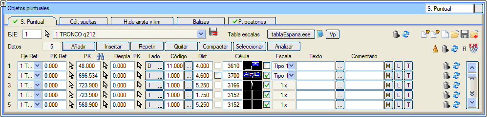
Diyalog kutusunun elemanları
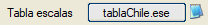
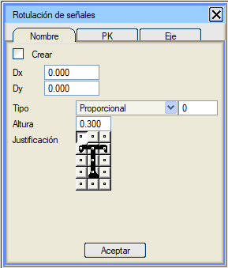
Tablodaki objelerin kotunun EKSEN'den mi yoksa MEVCUT SAM'den mi alınacağı belirtilebilir. Ayrıca, hücre özellikleriyle değiştirilmiş objelerin kotunu ve azimutunu gözden geçirmek isteyip istemediğinizi belirtmek için birkaç seçenek vardır. Bu seçenekler geneldir ve VOL dosyalarında saklanmaz.
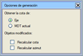
Aşağıda, satırlardaki her bir verinin neyi temsil ettiği detaylandırılmıştır: 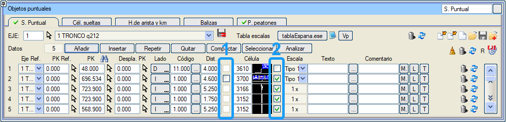
Not (Şili): Şili'nin düşey işaretlemesi Şili kütüphanesine eklenmiştir. Bazı hücreler, Şili kütüphanesinde bulunan, Şili'de kullanılan özel bir yazı tipi olan RutaCL.ttf'yi kullanır. Istram'ın onu kullanabilmesi için (dosyaya çift tıklayarak) kurulmalıdır. Ölçek Tablosu Istram ile birlikte gelen kütüphanelerde, düşey işaretlemenin tasarlandığı her bir ülkenin yönetmeliklerini yansıtan bu ölçek tablolarından bazıları bulunmaktadır. 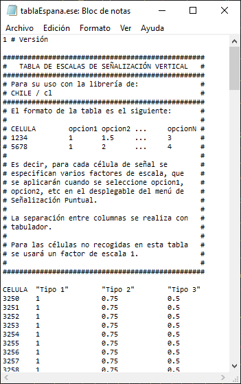
İşaretlerin ölçek faktörü bir ölçek tablosu ile verilir. Tablonun verilerini saklayan dosyanın kütüphanelerden birinde mevcut olması gerekir. 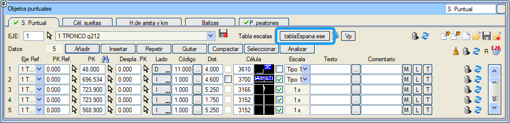
Dosyanın formatı başlığında açıklanmıştır: Her satır bir hücreye, yani bir işarete karşılık gelir. Bilgiler her satır içinde, sekmeyle ayrılmış sütunlar halinde düzenlenir. İlk satır başlık olarak kullanılır: HÜCRE metnini ve ardından düşünülecek farklı durumlar kadar sütun içermelidir. Her farklı durum tırnak içine alınacak ve buraya konulan metin, daha sonra Ölçek sütununun açılır menüsünde seçim için kullanılacaktır. Sonraki satırlarda, kullanıcının seçilebilir ölçek faktörlerinden etkilenmesini istediği tüm hücreler listelenecektir. İlk sütun hücre numarasını içerecek ve ardından başlıkta bulunan sütun sayısı kadar değer konulacaktır. 0 değeri, o sütun değerinin o hücre için bir seçenek olarak sunulmayacağı anlamına gelir. Bu tabloda listelenmeyen hücrelerin ilişkili ölçek seçenekleri olmayacak ve açılır menüde 1 x metniyle belirtilen sabit bir ölçek faktörü olan 1 verilecektir. Hız düğmesi aracılığıyla, .ese dosyasının ölçeğini "Hız Kesitleri" tablosunda tanımlanan farklı hız aralıklarına atamaya olanak tanıyan bir "Hız / Ölçek" tablosuna erişilir. 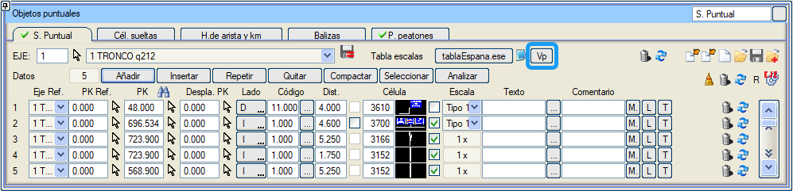
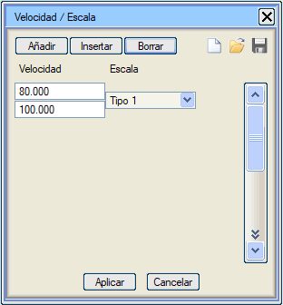
Serbest Hücreler Bu sekme, çizim içine başka herhangi bir yöntemle yerleştirdiğimiz hücreleri yerleştireceğimiz bir tablo oluşturmamızı sağlar: manuel olarak, Istram'ın başka herhangi bir yardımcı programı aracılığıyla, belki de içe aktarılmış veya başka herhangi bir nedenle çizimde zaten bulunan hücreler. 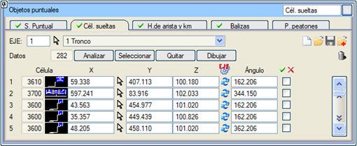
Bu amaçla aşağıdaki eylemleri yapabiliriz:
Kenar ve Km Taşları Bu sekme, çizime kilometre, hektometre vb. taşları yerleştirmemizi sağlar. Objeler KM + Delta KM'de çizilir. 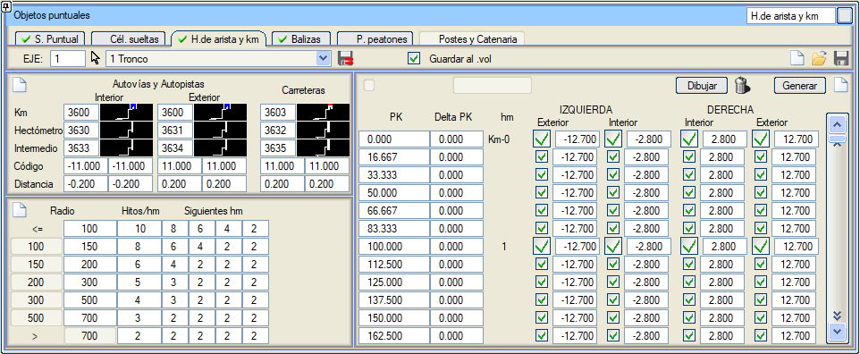
Sekmenin sol üst kısmında, türe (kilometre, hektometre ve ara) ve duruma göre (çift platformlu yolların içinde veya dışında veya karayollarında) taşları temsil etmek için hangi hücrelerin kullanılacağı, ayrıca kod ve koda olan enine mesafe belirtilir. Ayrıca solda, ancak alt kısımda, taşların yerleştirilme sıklığını belirten bir tablo bulunur:
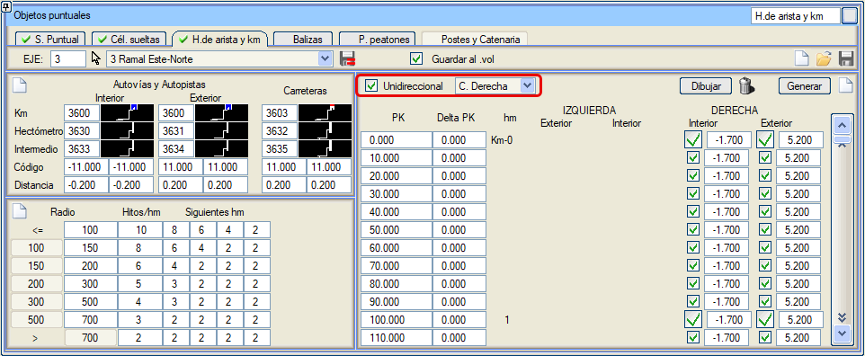
Sekmenin sol tarafında, sekmenin sol tarafında beyan edilen verileri kullanarak bir taş listesi oluşturan Oluştur düğmesi bulunur. Bu liste kullanıcı tarafından değiştirilebilir; herhangi birinin KM'sini ayarlayabilir veya istediklerini devre dışı bırakabilir. Oluşturulduğunda, her eleman için elde edilen eksene olan mesafe gösterilir; bu mesafe, çizimin ve BIM nesnesinin oluşturulmasının bu konumda yer alması için düzenlenebilir. Listeden memnun olduğunuzda, hücreleri istenen miktarlarda ve konumlarda yerleştirmek için Çiz'e basabilirsiniz. Km taşları için 5 veya daha fazla metinle tanımlanmış hücreler kullanırsak, birincisi eksenin tanımlayıcısı için ve sonrakiler kilometrenin rakamlarını tek tek yerleştirmek için kullanılır. Kütüphanede, Peru'da kullanılan ve kilometrenin rakamlarını dikey olarak etiketleyen C3434 hücresi bulunmaktadır. 6 metinli Hücrelerin tanımlanmasına izin verilir. Peru için kullanılırlar. İlk 2'si, Genel sekmesinde tanımlanan yolun Kategorisini ve numarasını, aralarında bir boşluk bırakarak etiketlemek için kullanılır. Diğer 4'ü Kilometrenin rakamları içindir. Kütüphaneye, bu türden C3420, 3421 ve 3422 hücreleri, ilişkili S3420, S3421 ve S3422 sembolleriyle birlikte eklenir. Reflektif Butonlar Bu sekme, Hız Diyagramı aracında oluşturulan reflektif buton listesine benzer şekilde, çizime manuel olarak reflektif butonlar yerleştirmemizi sağlar.  "Kurp reflektif butonları" hücrelerdir. Bu şekilde, herhangi bir kullanıcı geometrisiyle değiştirilebilirler. Ve BIM geometrisi içinde görüntülenebilirler. Yaya Geçitleri Yaya geçitlerini (C3225 ve C3226) temsil eden hücreleri yerleştirmek için kullanılır. İşleyişi noktasal işaretlemeye benzer; bu durumda bir KM, başlangıç ve bitiş kodları, yaya geçidi genişliği ve hücre tipi belirtmek gerekir. Her veri satırında iki düğmemiz var; biri silmek için, diğeri ise yaya geçidini temsil eden hücreyi çizime çizmek için.  Objelerin kotunun EKSEN'den mi yoksa mevcut SAM'den mi alınacağını yapılandırmaya ve elle değiştirilmiş objelere kotu yeniden atama imkanına olanak tanır. Objelerin kotunun EKSEN'den mi yoksa mevcut SAM'den mi alınacağını yapılandırmaya ve elle değiştirilmiş objelere kotu yeniden atama imkanına olanak tanır.BIM'de, yaya geçidi tipi objeler otomatik olarak şu özniteliği alır: boyalı yüzey. Bu, bu objelerin özelliklerinde gözlemlenebilir. Direkler ve Katener 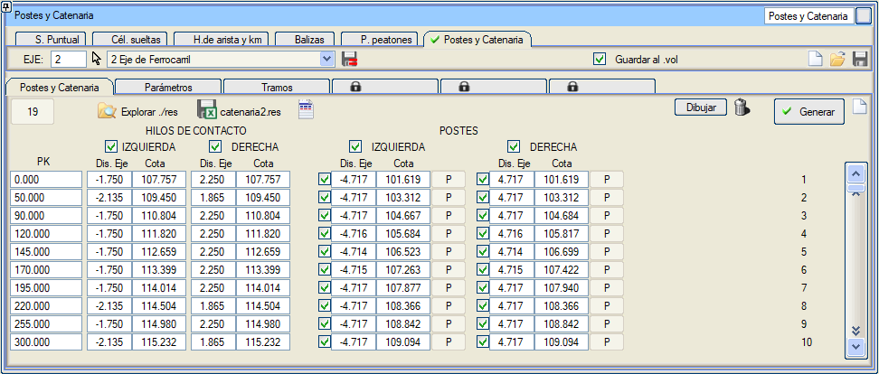 Bu diyalog kutusu Demiryolu eksenlerinde mevcuttur. Direkler ve Katener sekmesi şunları tanımlamamızı sağlar:
Parametreler sekmesi ayrıca, yarıçapa bağlı olarak açıklıkların uzunluğunu (ardışık açıklıklar arasında maksimum dL maks uzunluk farkı ile) ve bir direkte ve bir sonrakinde kontak tellerinin hat eksenine göre merkezden kaçıklığını tanımlayan bir tabloya sahiptir.
Askı teli aralığı Yarıçap/Açıklık Uzunluğuna göre tanımlanabilir. 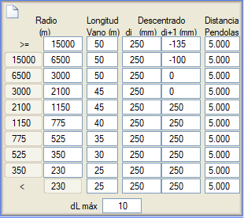
Tabloda varsayılan olarak görünen değerler, üç raylı karma bir hat için ADIF değerlerine karşılık gelir.
Bu tabloda, telin hiçbir zaman iki hattın eksenlerinden herhangi birinden 250 mm'den daha uzakta olmaması hedeflenir, bu nedenle bir tarafta ikincil hattın ekseninin diğer taraftan 115 mm uzakta olmasına karşılık gelen 135 mm değeri görünür. Yarıçaplar küçüldükçe, merkezden kaçıklık sadece eksenin bir tarafında (dış taraf) olur. Dolayısıyla, tablo sola doğru kurplara ve ikincil eksenin ana eksenin sağında olmasına karşılık gelir. Kesitlendirme, mesafe, maksimum örtüşme uzunluğu ve teller arasındaki ayırma ile tanımlanabilir. Direklerin harita üzerindeki gösterimi için hücre tipleri, direklerdeki kontak telinin konumunu planda temsil etmek için bir sembol ve kontak telini planda temsil etmek için bir çizgi tipi özelleştirilebilir. Enkesitlerdeki gösterim için de sembol tipleri seçilebilir.
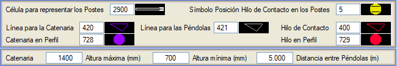
Kesitler sekmesi, direk tipini KM'lere göre bölümlendirmeye olanak tanır. Direk yerleşimi, ilk kesitin KM'sinde başlar ve tarafa ve kesitlendirmelerin örtüşme alanına göre farklı bir direk tanımlanabilir. Ayrıca, direğin her iki tarafta yapılıp yapılmayacağına ve raya olan mesafeye de karar verilebilir.
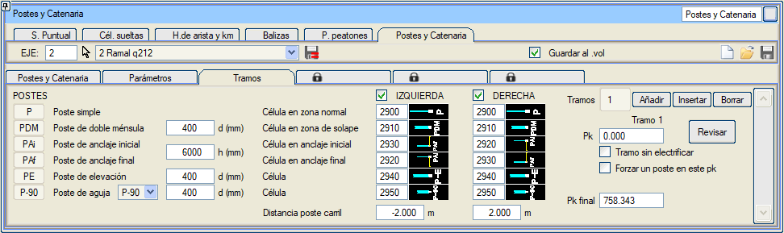 3D modelimizde (BIM) doğru bir şekilde temsil edilmesini istiyorsak, hem hücremizin hem de kontak hattı tipinin ilişkili bir 3D/QA nesnesine sahip olması gerekir. Kullanılacak farklı direk tiplerini temsil etmek için farklı hücre tipleri tanımlanabilir: basit, çift konsollu, ankraj (kesitlendirmenin başında ve sonunda), yükseltme ve makas. Direkler ve katener listesi sekmesinde [Oluştur] düğmesine basıldığında, her direk için [p], [PDM], [PAi],[ PAf], [PE] veya [Pag] tipi eklenir. Menünün bu bölümünde ayrıca, tipi ve kontak tellerinin nominal yüksekliği üzerindeki maksimum ve minimum yükseklikleri ile tanımlanan katener telini de tanımlayabiliriz. Katenerin yerleştirilmesi ilk kesitin KM'sinde başlar. Ayrıca, aralarındaki mesafe ile Askı Telleri için bir çizgi tipi tanımlamaya da olanak tanır. Elektrifikasyonsuz Kesit seçeneği, bu kesitin KM'si ile bir sonrakinin KM'si arasında, direk veya katener oluşturulmayacak bir kesit eklemeye olanak tanır. Elektrifikasyonu eksenin son KM'sinden önce askıya almak istenirse, sonuna bu KM ile elektrifikasyonsuz bir kesit eklemek yeterli olacaktır. Oluştur düğmesi ile, eksen boyunca direklerin ve telin konumu hesaplanır ve catenariaN.res raporu oluşturulur. Bu tablo ve yapılandırması .vol dosyasına kaydedilebilir.  Çiz düğmesi ile direkleri ve telleri haritaya aktarırız. 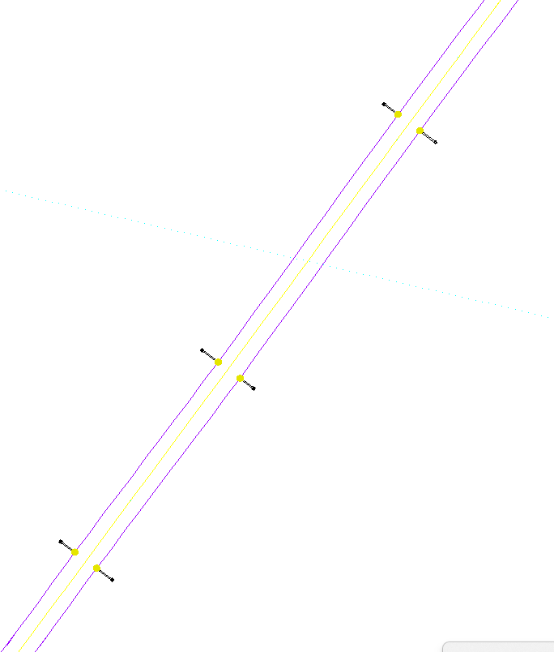
3D modelde doğru bir temsil için, direkler ve katener menüsünde .vol'a Kaydet seçeneğini ve Proje sekmesinde hesaplama yaparken Noktasal objeler seçeneğini işaretli olmalıdır:
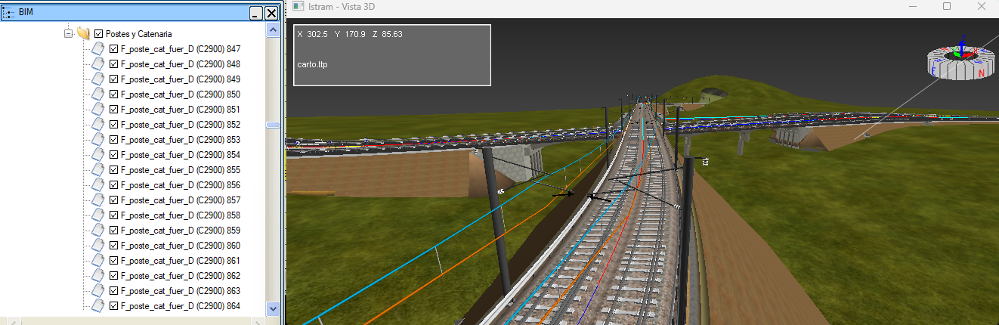
ISTRAM'ın temel kütüphanesinde, ilişkili sembolleri ve IFC nesneleriyle birlikte farklı direk tiplerini (C2902, C2903, C2904 ve C2905) temsil eden hücreler bulunmaktadır.
|
 .
.